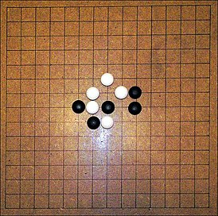

Home
Рэндзю
Рэ́ндзю (яп. 連珠) — настольная логическая игра для двух игроков, спортивный
вариант крестиков-ноликов до пяти в ряд, сочетающая в себе, кроме спортивных элементов,
также элементы искусства и философии. Возникла в Китае более четырёх тысяч лет назад,
вариации были известны и цивилизации инков, и Древнему Риму. В начале нашей эры игра из Китая попала в Японию,
где и получила наибольшее распространение. Принятый спортивный вариант, равно как и название, также родились в Японии.
Старые вариации игры известны также под названиями «гомоку» и «гомокунарабэ», что означает «пять камней» и «пять камней в ряд».
Игра подчиняется определённым правилам, которые регулируются единой международной федерацией, RIF. Титульные соревнования
(чемпионаты Европы, мира, в том числе заочные) регламентируются непосредственно RIF,
соревнования уровнем не выше национальных — соответствующими национальными организациями.
